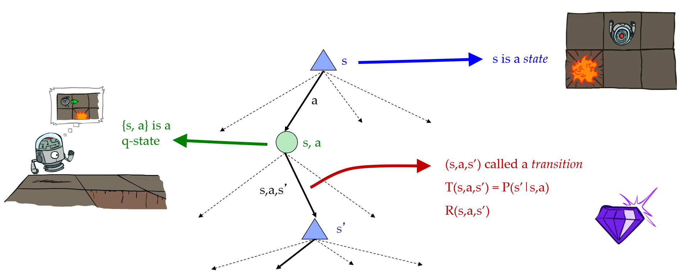

MDP : the way of formalizing the idea of non-deterministic search which is search when your actions outcomes are uncertain.
An MDP is defined by:
A set of states s ∈ S
A set of actions a ∈ A
A transition function T(s, a, s’)
Probability that a from s leads to s’, i.e., P(s’| s, a)
Also called the model or the dynamics
A reward function R(s, a, s’)
Sometimes just R(s) or R(s’)
A start state
Maybe a terminal state
What is Markov about MDPs?
“Markov” generally means that given the present state, the future and the past are independent
For Markov decision processes, “Markov” means action outcomes depend only on the current state:
P(St+1 = s' | St=st,At=at,St-1=st-1,At-1=at-1,..., S₀=s₀) = P(St+1 = s' | St=st,At=at)
This is just like search,the probability distribution over your outcomes depends only on the current state and action , not on the whole histroy of how you got there.
So this is important property in MDP is to make sure that you define your transition function and your state in such a way that the transition probabilities depend only on the current state and action.
Example: Grid World
A maze-like problem
The agent lives in a grid
Walls block the agent’s path
Noisy movement: actions do not always go as planned
80% of the time, the action North takes the agent North (if there is no wall there)
10% of the time, North takes the agent West; 10% East
If there is a wall in the direction the agent would have been taken, the agent stays put
similar rules for the other 3 directions
The agent receives rewards
Small “living” reward each step (can be negative).this is sometimes called a living reward or a living penalty based on whether it's positive or negative.
Big rewards come at the end (good or bad).terminal utilities, shown as the plus 1 and minus 1(also the exit to game end).
Goal: maximize sum of rewards
Policies
For MDPs, we want an optimal policy π* : S → A
A policy π gives an action for each state, like a recommendation action
An optimal policy is one that maximizes expected utility if followed
An explicit policy defines a reflex agent
Example: Racing MDP
Definition:
A robot car wants to travel far, quickly
Three states: Cool, Warm, Overheated
Two actions: Slow, Fast
Going faster gets double reward
Any MDP is defining a search tree. So if you're in some particular state , for example if you're in the state where the car is cool, you have 2 actions: slow or fast.
Each MDP state projects an expectimax-like search tree.

But we’re doing way too much work with expectimax! The problems are:
States are repeated
Tree goes on forever
To Solve these problems, Let's learn about utilities first.
Utilities
Principle of maximum expected utility: A rational agent should chose the action that maximizes its expected utility, given its knowledge.
The purpose of utilities is:
For worst-case minimax reasoning, terminal function scale doesn’t matter
We just want better states to have higher evaluations (get the ordering right)
We call this insensitivity to monotonic transformations
For average-case expectimax reasoning, we need magnitudes to be meaningful
Utilities are functions from outcomes (states of the world) to real numbers that describe an agent’s preferences.
Where do utilities come from?
In a game, may be simple (+1/-1)
Utilities summarize the agent’s goals
Theorem: any “rational” preferences can be summarized as a utility function
We hard-wire utilities and let behaviors emerge.
Why don’t we let agents pick utilities?
vacuum cleaner example: the agent would like to do nothing ,and so easy to do nothing.
Why don’t we prescribe behaviors?
it's very hard to write down , complicated and context-defpendent.
In a MDP the rewards come to you step-by-step , we need to figure out what our utility function acutally is. In the simplest case you just add up the rewards but it can be little more subtle than that.
What preferences should an agent have over reward sequences? More or less? Now or later?
We use discount to express preferences over reward sequences.
Discounting
It’s reasonable to maximize the sum of rewards. And it’s also reasonable to prefer rewards now to rewards later. So the solution is: values of rewards decay exponentially .
How to discount?
Each time we descend a level, we multiply in the discount once
Why discount?
Sooner rewards probably do have higher utility than later rewards
Also helps our algorithms converge
If the agent liked A better than B now, it should like it better shifted into the future as well and vice versa.
Smaller γ means smaller “horizon” – shorter term focus
Absorbing state: guarantee that for every policy, a terminal state will eventually be reached (like “overheated” for racing)
Solving: MDPs
In "Example: Racing MDP", We have put forward two problems, and now we can give the idea to solve:
States are repeated
Idea: Only compute needed quantities once
Tree goes on forever
Idea: Do a depth-limited computation, but with increasing depths until change is small
Note: deep parts of the tree eventually don’t matter if γ < 1
Optimal Quantities
The utility (value) of a state s:
V*(s) = expected utility starting in s and acting optimally
what the star means is this is the value under optimal action
The value (utility) of a q-state (s,a):
Q*(s,a) = expected utility starting out having taken action a from state s and (thereafter) acting optimally
Each action do have a Q-value
The optimal policy:
π*(s) = optimal action from state s
Therefore, recursive definition of value (The Bellman Equation):
If we can determine a value V (s) for each state s ∈ S so that the Bellman equation can calculate accurately for each of these states, we can conclude that these values are optimal for their respective states.
Value Iteration
Now that we have a framework that can verify the optimality of the values of various states in the MDP, we naturally want to know how to accurately calculate these optimal values. For this reason, we need a time-limited values.
Define to be the optimal value of s if the game ends in k more time steps
Equivalently, it’s what a depth-k expectimax would give from s
Value iteration is a dynamic programming algorithm, which calculates the time limit value through an extended time limit of iteration until convergence.
Start with = 0: no time steps left means an expected reward sum of zero
Given vector of Vk(s) values, do one ply of expectimax from each state:
Repeat until convergence, which yields V*
Complexity of each iteration: O(S²A)
Theorem: will converge to unique optimal values
Basic idea: approximations get refined towards optimal values
Policy may converge long before values do
Example: Value Iteration
Policy Extraction
Policy extraction allows us to determine which action to take given expected values for each state V(s).
If we are in a state s, we should take action a that will produce the maximum expected benefits. In other words, We need to run a one-step expectimax and find the action that corresponds to the given value.
Computing Actions from Values
Given the optimal values for each state V*(s), we can extract the optimal policy by doing the following:
This is only a depth one expectimax because the values V*(s') are all already known so no further recursion needs to be done.
Computing Actions from Q-Values
Given the q values for each state action pair Q*(s,a), we can extract the optimal policy by doing the following:
Important lesson: actions are easier to select from q-values than values!
Policy Iteration
Value iteration repeats the bellman updates. You have iteractions where K gets larger and larger starting at 0. For each iteration you visit each state and for each state you look at each action and for each action you look at each outcome. It's not always the best solution.
Problem 1: It’s slow – O(S²A) per iteration
Problem 2: The “max” at each state rarely changes
Problem 3: The policy often converges long before the values
Alternative approach for optimal values(policy iteration):
Step 1: Policy Evaluation: calculate utilities for some fixed policy (not optimal utilities!) until convergence
Step 2: Policy Improvement: update policy using one-step look-ahead with resulting converged (but not optimal!) utilities as future values
Repeat steps until policy converges.
Policy Evaluation
Policy evaluation is an evaluation of the expected reward of a policy.
Policy evaluation can be characterised as as defined by the following equation:
where = 0 for terminal states.
Note that this is very similar to the Bellman equation, except is not the value of the best action, but instead just as the value for π(s), the action that would be chosen in s by the policy π.
Policy Improvement
If we have a policy and we want to improve it, we can use policy improvement to change the policy (that is, change the actions recommended for states) by updating the actions it recommends based on V(s) that we receive from the policy evaluation.
We take one step look-ahead:
When , the algorithm converges successfully, we can get .
Comparison
Both value iteration and policy iteration compute the same thing (all optimal values)
In value iteration:
Every iteration updates both the values and (implicitly) the policy
We don’t track the policy, but taking the max over actions implicitly recomputes it
In policy iteration:
We do several passes that update utilities with fixed policy (each pass is fast because we consider only one action, not all of them)
After the policy is evaluated, a new policy is chosen (slow like a value iteration pass)
The new policy will be better (or we’re done)
Both are dynamic programs for solving MDPs
Why would you ever do value iteration ?
It's simpler and in cases where there are a small number of actions you might do it.


 .
.